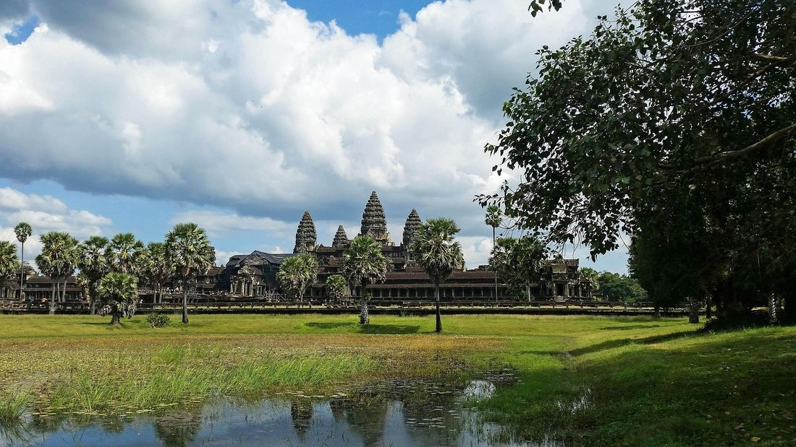

1.3 Developments in South and Southeast Asia
- LO-A: Hindu and Buddhist kingdoms: The Vijayanagara Empire (South India, 1336–1646) was a major Hindu state defending against the Delhi Sultanate's expansion. The Khmer Empire (Cambodia, 802–1431) built Angkor Wat, one of the world's largest religious monuments, using hydraulic engineering to support a massive rice-growing population. The Majapahit Empire (Java, 1293–1527) controlled much of maritime Southeast Asia through trade dominance and Hindu-Buddhist cultural legitimacy.
- LO-B: Explain how Hinduism and Buddhism shaped political and…: Bhakti movement: In South Asia, the Bhakti movement offered a devotional, emotionally direct form of Hindu worship that deliberately rejected caste hierarchy, Sanskrit-only ritual, and Brahmin intermediaries. Bhakti poets and saints, including women and lower-caste individuals, composed devotional songs in vernacular languages accessible to ordinary people. Bhakti parallels Sufism in its emotionally accessible, inclusive approach to spirituality.
- LO-C: Explain how Islam entered South and Southeast Asia…: Islam enters South and Southeast Asia: Sufi missionaries and Muslim merchants brought Islam to South Asia and coastal Southeast Asia. In Southeast Asia, Muslim merchants who dominated trade in the Indian Ocean's eastern half introduced rulers of port cities to Islam, the Malaccan Sultanate became Muslim c. 1400, transforming trade in the region. Islam spread not by conquering but by offering commercial networks and spiritual community.
- LO-D: Explain the role of the Bhakti movement in…: Southeast Asia as crossroads: The monsoon winds and strait geography of Southeast Asia made it a commercial and cultural crossroads connecting Indian Ocean and South China Sea trade. Rulers in the region selectively borrowed from India, China, and the Islamic world, adopting Sanskrit titles, Buddhist symbols, Confucian administrative ideas, and Islamic law, creating distinctive hybrid civilizations.
Try each question before revealing the answer.
1. Both the Bhakti movement in South Asia and Sufism in the Islamic world emphasized personal, emotional connection to the divine over formal ritual. What does this parallel suggest about religious change across cultures?
2. The Khmer Empire built Angkor Wat, one of the world's largest religious monuments, in the 12th century. What does this achievement reveal about the relationship between religion and political power in the region?
3. Islam spread into Southeast Asia primarily through merchants and Sufi missionaries rather than military conquest. Why might this method have been more effective than conquest in this specific regional context?
4. Southeast Asian rulers borrowed selectively from Indian, Chinese, and Islamic political and cultural traditions. What historical process does this selective borrowing illustrate?
5. The Vijayanagara Empire (South India) defined itself partly in opposition to the expanding Delhi Sultanate. What does this tension reveal about the relationship between Hindu and Muslim political powers in 14th–15th century South Asia?
- Explain how and why states in South and Southeast Asia were built and maintained
- Explain how Hinduism and Buddhism shaped political and cultural life in the region
- Explain how Islam entered South and Southeast Asia and the role of Sufism and trade
- Explain the role of the Bhakti movement in South Asian religious culture
Tap a term for its definition.
-
Definition: A Hindu empire in South India (1336–1646 CE), centered in present-day Karnataka; one of the last great Hindu kingdoms before European colonial influence. Significance: Defined itself as a defender of Hindu culture against the Delhi Sultanate's expansion; a major center of Tamil and Sanskrit literature, temple architecture, and trade; ruled a population of millions until defeated by a coalition of Deccan Sultanates in 1565.
-
Definition: A powerful Hindu-Buddhist empire in mainland Southeast Asia (802–1431 CE), centered at Angkor in present-day Cambodia. Significance: Built Angkor Wat, one of the world's largest religious structures, and sustained a large agricultural population through sophisticated hydraulic engineering (reservoirs and canals). At its height, Angkor was possibly the world's largest pre-industrial urban area.
-
Definition: A Hindu-Buddhist maritime empire based in Java (1293–1527 CE) that at its peak controlled much of maritime Southeast Asia through trade networks and political alliances. Significance: Represented the height of Javanese Hindu-Buddhist civilization; its decline in the 15th century corresponded with the spread of Islam through Southeast Asian coastal regions. Often considered a cultural ancestor of modern Indonesian identity.
-
Definition: A devotional religious movement within Hinduism (c. 7th–17th centuries CE) emphasizing direct, personal, emotionally expressed love for a personal deity, bypassing Brahmin ritual intermediaries and rejecting caste distinctions. Significance: Democratized Hindu worship; produced devotional literature in vernacular languages accessible to ordinary people; challenged caste hierarchy by welcoming lower-caste and female spiritual leaders.
-
Definition: Sanskrit for "god-king", the concept in Hindu and Buddhist-influenced Southeast Asian political thought that the ruler was a divine or semi-divine figure whose cosmic power maintained order in both the heavens and the state. Significance: Provided religious legitimacy for Southeast Asian rulers; justified large-scale temple building as expressions of royal cosmic power; shaped the political culture of the Khmer, Majapahit, and other regional empires.
-
Definition: A Muslim trading port-state on the Malay Peninsula (c. 1400–1511 CE), controlling the Strait of Malacca, the chokepoint for maritime trade between the Indian Ocean and South China Sea. Significance: Its ruler's conversion to Islam c. 1400 was a turning point in Southeast Asian religious history; Muslim merchants favored Malacca, making it the dominant commercial hub of the region and a model for Islamic port-state governance that influenced later kingdoms.
-
Definition: Seasonal wind patterns in the Indian Ocean that blow northeast from October–April (enabling southwestward trade) and southwest from May–September (enabling northeastward trade). Significance: Made Indian Ocean trade predictable and efficient for thousands of years; sailors could plan voyages around monsoon calendars. The regularity of monsoon winds is the reason the Indian Ocean became the world's most commercially active waterway by 1200 CE.
-
Definition: A massive temple complex in Cambodia (built c. 1113–1150 CE) by Khmer King Suryavarman II; originally dedicated to the Hindu god Vishnu and later converted to Buddhist use. Significance: The world's largest religious monument by area (~400 acres); symbolized the god-king's cosmic power; surrounded by an enormous hydraulic system that supported the Khmer Empire's agricultural base. Now a UNESCO World Heritage site and a symbol of Cambodian national identity.
Hindu and Buddhist Kingdoms: Political Power Through Sacred Legitimacy

Angkor Wat (c. 1113–1150 CE) in present-day Cambodia, the world's largest religious monument. Built by the Khmer Empire using sophisticated hydraulic engineering, it expressed the king's divine authority while anchoring the empire's administrative capital. Image credit not specified.
In South and Southeast Asia c. 1200–1450, Hinduism and Buddhism were not just personal spiritual practices. They were the political technologies through which rulers legitimized their authority. The concept of the devaraja (Sanskrit: "god-king") held that the ruler was a semi-divine figure whose cosmic power maintained order in both the heavens and the earthly realm. Building great temples was therefore not merely an act of religious devotion. It was political communication, demonstrating to subjects and rivals alike that the king possessed divine favor and the organizational capacity to command thousands of workers and vast resources.
The Khmer Empire in mainland Southeast Asia (802–1431 CE) was the most spectacular expression of this model. Centered at Angkor in present-day Cambodia, the Khmer Empire constructed a series of enormous temple complexes, most famously Angkor Wat (c. 1113 CE), dedicated initially to the Hindu god Vishnu and later converted to Buddhist use. Angkor Wat covers approximately 400 acres, surrounded by a moat nearly three miles in circumference, and required coordinating thousands of workers and immense quantities of sandstone transported from quarries miles away. Around the temple complex, Khmer engineers built an extraordinary hydraulic infrastructure, massive reservoirs (barays) and canals, that irrigated rice paddies and supported a population estimated at up to one million people in the greater Angkor area, making it possibly the world's largest pre-industrial urban complex.
In South India, the Vijayanagara Empire (founded 1336 CE) emerged as a major Hindu power in the Deccan region, in part as a response to the Delhi Sultanate's southward expansion. Vijayanagara's rulers presented themselves as protectors of Hindu culture, patronizing Sanskrit and Tamil literature, temple construction, and Brahmin institutions. Their capital city was a sprawling metropolis that awed foreign travelers, the Portuguese merchant Domingo Paes, visiting in the early 16th century, compared it to Rome.
Buddhist monasticism shaped political and social life across much of the region. In mainland Southeast Asia, the Pagan Kingdom in Burma, the Sukhothai and Ayutthaya kingdoms in Thailand, and the Sinhala dynasties of Sri Lanka, Theravada Buddhism was the dominant tradition. Theravada centered on the monastic sangha (community of monks) as the core institution of religious life: monks educated children, preserved texts, provided medical care, and maintained ritual calendars that organized community life. Rulers sponsored monasteries and stupas (sacred mounds enshrining relics) to earn spiritual merit and demonstrate piety, tightly binding political and religious authority. Because monks were among the few literate members of these societies, Buddhist monasticism also served as an administrative and educational infrastructure without which these states could not have functioned.
The Majapahit Empire: Maritime Power in Island Southeast Asia
While the Khmer dominated mainland Southeast Asia, the Majapahit Empire (1293–1527 CE) dominated the archipelago. Based in Java (present-day Indonesia), Majapahit at its height claimed suzerainty over much of maritime Southeast Asia, from Sumatra to the Malay Peninsula to parts of the Philippines and Borneo. Its power rested not on massive armies but on control of trade routes, tribute collection from port cities, and the cultural prestige of its Hindu-Buddhist civilization.
Majapahit's prime minister, Gajah Mada (c. 1290–1364), is celebrated as one of Southeast Asia's greatest statesmen, a sworn enemy of Majapahit's rivals who reportedly took a vow not to eat spiced food until he had unified the entire archipelago under Javanese authority. Whether the vow is historical or legendary, it captures Majapahit's imperial ambitions. The empire's cultural legacy was enormous: Majapahit court literature, art, and religion shaped the identities of later Indonesian cultures. Modern Indonesia, the world's largest Muslim-majority nation, traces much of its pre-Islamic cultural heritage to Majapahit.
The Bhakti Movement: Democratizing Hindu Devotion
Mirabai (c. 1498–1546), a Rajput princess who became one of the most celebrated Bhakti poets, composing devotional songs to Krishna in the Rajasthani vernacular accessible to ordinary people regardless of caste or gender. AI-generated illustration (Google Gemini, 2025), commercially licensed.
Within South Asia itself, a major religious transformation was underway: the Bhakti movement. By 1200 CE, Hinduism as practiced by the Brahmin priestly class involved elaborate ritual, Sanskrit texts inaccessible to most people, and reinforcement of caste hierarchy. The Bhakti movement challenged all of this. Its core idea was simple and revolutionary: any person, regardless of caste, gender, or education, could achieve direct, personal union with a personal deity (most commonly Vishnu or Shiva) through loving devotion (bhakti).
Bhakti saints and poets composed their devotional songs not in Sanskrit but in regional vernacular languages, Tamil, Telugu, Marathi, Rajasthani, making spiritual expression accessible to ordinary farmers, women, and low-caste people who could not read Sanskrit. Some of the most celebrated Bhakti figures were from lower castes or were women:
- Mirabai (c. 1498–1546) was a Rajput princess who composed passionate devotional songs to the god Krishna in the vernacular, defying both her royal family's expectations and caste convention.
- Kabir (c. 1440–1518) was a weaver from a low-caste Muslim family who composed poetry blending Hindu and Islamic spiritual ideas, deliberately rejecting both Brahmin ritual and formal Islamic law in favor of direct spiritual experience.
- Ramananda (c. 1400–1470) deliberately accepted disciples regardless of caste, including women, Muslims, and untouchables, in a radical challenge to Brahmin hierarchy.
The Bhakti movement was not a political revolution, but it had significant social consequences: it produced vernacular literature in multiple Indian languages, challenged (without destroying) caste hierarchy in spiritual contexts, created communities of practice that crossed social boundaries, and, in figures like Kabir, laid groundwork for syncretic traditions (like Sikhism) that blended Hindu and Islamic elements.
Islam Enters South and Southeast Asia
Islam reached both South Asia and Southeast Asia not primarily through military conquest (though conquest played a role in South Asia via the Delhi Sultanate) but through the quieter channels of trade and Sufi missionary activity.
In South Asia, Muslim merchants had been trading along the coasts since the 7th century, long before the Delhi Sultanate imposed Islamic rule over northern India. Muslim trading communities established themselves in Gujarat and Kerala, marrying into local families and building mosques without political disruption. The Delhi Sultanate (1206–1526) extended Islamic governance across northern India, but its relationship with the majority Hindu population required pragmatic accommodation rather than forced conversion. Sufi missionaries, particularly the major Sufi orders (silsilas) that established networks of shrines across the subcontinent, spread Islam into rural areas through personal relationships, healing, and spiritual community. Sufi dargahs (shrines) became pilgrimage sites where Muslims and Hindus often worshipped side by side, reflecting the permeable religious boundaries of everyday South Asian life.
In Southeast Asia, Islam spread primarily through trade. Muslim merchants had long dominated the western half of the Indian Ocean trade network; by the 13th and 14th centuries, they were increasingly dominant in the eastern half as well. Port city rulers on the Malay Peninsula, Sumatra, and Java converted to Islam to attract Muslim traders and gain access to Islamic commercial networks. The most consequential conversion was that of the Malaccan Sultanate (c. 1400 CE), a powerful port-state controlling the Strait of Malacca, the chokepoint for trade between the Indian Ocean and South China Sea. Once Malacca's ruler converted, the city became a magnet for Muslim traders, and Islam spread rapidly through the interconnected port cities of the archipelago. By the time the Portuguese arrived in 1511, Islam was well-established throughout coastal Southeast Asia.
Southeast Asia as Cultural Crossroads
Perhaps no region in the world c. 1200–1450 illustrates the concept of cultural exchange more vividly than Southeast Asia. The region sat at the intersection of the world's most active trade routes. Indian Ocean monsoon winds connected it to India and Arabia to the west; prevailing winds and ocean currents connected it to China to the north. This geography made it a constant recipient of cultural influences from multiple directions simultaneously.
Southeast Asian rulers were active agents in this cultural exchange, not passive recipients. They selectively borrowed what served their political and cultural purposes:
- From India: Sanskrit as a language of court and religion; Hindu and Buddhist cosmological frameworks for legitimizing kingship; temple architectural traditions; legal codes; artistic styles
- From China: Administrative techniques; tributary relationships (sending missions to the Chinese court for trade rights and recognition); porcelain and silk imports; Chinese merchant communities in Southeast Asian ports
- From the Islamic world: Commercial law and practices; the Arabic numeral system; eventually Islam itself, adopted first by port-city rulers seeking commercial advantages
The result was a set of distinctively hybrid civilizations, Khmer, Javanese, Malay, Vietnamese, that were recognizably influenced by external traditions yet not identical to any of them. Angkor Wat is Indian in its temple-mountain symbolism but distinctively Khmer in its scale and artistic style. The Majapahit court combined Sanskrit literature with local Javanese traditions. The Malaccan Sultanate integrated Islamic governance with Malay cultural practices. This creative synthesis is the defining characteristic of Southeast Asian civilization in the pre-modern period.
These videos will help you review Developments in South and Southeast Asia and solidify key concepts before your exam.
- The Khmer Empire was a theocracy in which the priesthood controlled political power
- Buddhism replaced Hinduism as the primary religion of the Khmer Empire by the 12th century
- Khmer rulers used Hindu religious symbolism to legitimize their political authority
- Indian rulers directly controlled the Khmer Empire through tributary relationships
- Both emerged as responses to perceived exclusivity in formal religion and emphasized accessible, personal devotion
- Both sought to eliminate formal religious institutions and replace them with individual practice
- Both spread primarily through military conquest of new territories
- Both rejected the existence of a single supreme deity
- Indian military conquest imposed Hinduism on Southeast Asian peoples against their will
- Trade networks facilitated the voluntary adoption of Indian religious and political ideas by Southeast Asian elites seeking to strengthen their authority
- Buddhist missionaries deliberately targeted Southeast Asian rulers as more receptive to conversion than ordinary people
- Indian cultural influence in Southeast Asia was limited to coastal trading ports and did not penetrate inland kingdoms
- The Delhi Sultanate's rulers converted to Hinduism to better govern their majority-Hindu population
- The Delhi Sultanate promoted religious syncretism by officially combining Islamic and Hindu religious practices into a single state religion
- The Bhakti movement emerged as a direct response to the systematic religious persecution carried out by Delhi Sultanate rulers
- Muslim rulers in South Asia developed pragmatic accommodations with Hindu subjects to maintain stable governance over a religiously diverse population
- Muslim merchants used military force to establish trading privileges in Indian port cities
- Arab domination of Indian Ocean trade routes prevented Indian merchants from participating in long-distance commerce
- The Indian Ocean trade network fostered permanent diaspora communities that created enduring cross-cultural connections without requiring religious conversion
- The spice trade motivated European powers to establish colonies along the Indian coast by the 14th century
Answer parts A, B, and C. Direct, specific responses only. Do not write an essay.
Part A
Briefly describe ONE way Hindu or Buddhist religion was used to legitimize political power in South or Southeast Asia c. 1200–1450.
Part B
Briefly explain ONE way the Bhakti movement challenged existing social or religious hierarchies in South Asia.
Part C
Briefly explain ONE way trade facilitated the spread of Islam into Southeast Asia c. 1200–1450.
Write a full essay with thesis, contextualization, evidence, and historical reasoning. The prompt asks about extent. You must argue a position, acknowledge counter-evidence (trade, military power, geography), and explain why religion was or was not the dominant factor. Historical reasoning skill: Argumentation.